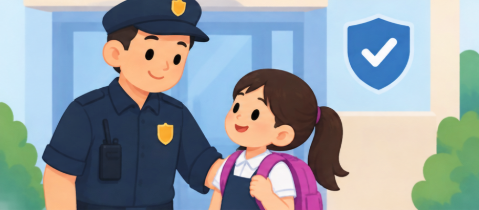
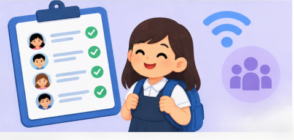

El control de asistencia más seguro para tus pequeños
Olvídate del registro manual y las demoras en la puerta. Con KIDS CHECK, automatiza la asistencia, envía notificaciones en tiempo real a los papis y garantiza la seguridad de cada niño desde el primer segundo.
.png)
¿Cómo funciona KIDS CHECK?
Un flujo automatizado en 3 sencillos pasos, diseñado para mantener informadas a las familias de nuestro nido.
.png)
1. Registro con Credencial
El niño o su apoderado acerca su credencial al lector de KIDS CHECK al llegar. El sistema captura instantáneamente la hora exacta de entrada o salida sin generar filas.
.png)
2. Notificación Inmediata
En esa misma fracción de segundo, la plataforma envía un mensaje automático al celular de los papis, informándoles que su hijo ha ingresado o salido de forma segura.
.png)
3. Panel Directivo
Las misses y directoras acceden a un panel en vivo donde visualizan estadísticas de asistencia, consolidando todo en reportes muy fáciles de leer.
Beneficios de implementar KIDS CHECK
Descubre por qué somos la herramienta preferida por los nidos y colegios iniciales más modernos.
Tranquilidad Familiar
Los padres eliminan la incertidumbre al saber en tiempo real que sus pequeños están seguros dentro del nido.

Más tiempo para jugar
Las misses ya no pierden tiempo pasando lista manualmente y pueden dedicarse a recibir a los niños con alegría.
Seguridad Reforzada
Control estricto de quién está dentro de la institución y quién recoge a cada niño a la hora de salida.

Control de Ausentismo
Las estadísticas claras permiten al nido identificar patrones de faltas para comunicarse con las familias a tiempo.